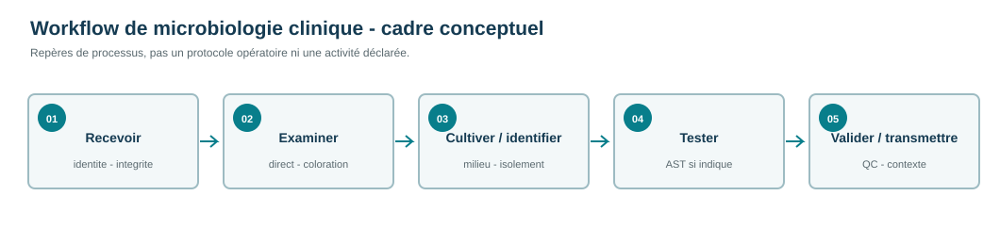
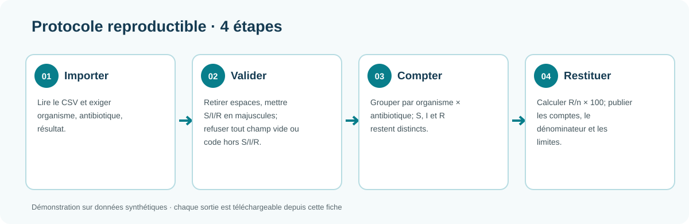
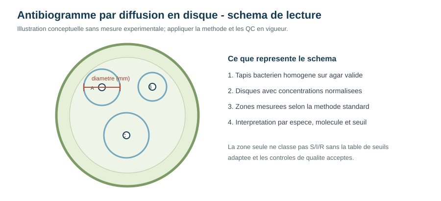
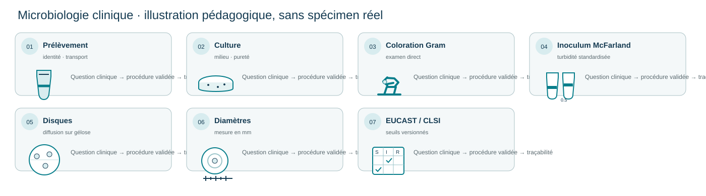

Microbiologie clinique : du prélèvement à l’antibiogramme
Construire une analyse traçable des profils de sensibilité, de la donnée brute au résultat interprétable.
Données de démonstration synthétiques · analyse descriptiveContexte et justification
La microbiologie clinique relie le prélèvement, l’examen direct, la culture, l’identification, l’antibiogramme et la validation du compte rendu. Les figures pédagogiques sont des schémas, pas des photographies de boîtes ni des résultats de laboratoire.
Données, tableaux, graphiques, JSON et scripts affichés dans cette fiche; les liens de téléchargement sont réservés aux logiciels.
1. Présentation du problème
La résistance aux antimicrobiens (RAM) survient lorsqu’un microorganisme n’est plus inhibé ou détruit par un médicament auquel il était sensible. Elle complique la prise en charge des infections, peut prolonger la durée d’hospitalisation et augmente le risque d’échec thérapeutique. En laboratoire, l’antibiogramme transforme une observation microbiologique en catégories d’interprétation : S pour sensible, I pour sensible avec exposition augmentée ou catégorie intermédiaire selon le référentiel utilisé, et R pour résistant.
Une analyse utile ne consiste donc pas seulement à compter les résultats résistants. Elle doit conserver le microorganisme, l’antibiotique, la catégorie observée, le nombre de résultats disponibles et le dénominateur utilisé pour calculer chaque proportion. Cette traçabilité évite de confondre une fréquence calculée sur deux isolats avec une fréquence représentative d’un service ou d’une population entière.
2. Question d’analyse et objectifs
Question : comment résumer de manière transparente des résultats d’antibiogramme afin de repérer les profils de résistance qui mériteraient une investigation plus approfondie ?
Objectif général : décrire la distribution des catégories de sensibilité dans un jeu de données de démonstration.
- identifier les couples organisme–antibiotique présents dans le fichier ;
- conserver séparément les résultats sensibles, intermédiaires et résistants ;
- calculer les effectifs et la proportion de résultats résistants avec un dénominateur explicite ;
- produire un tableau et une figure faciles à vérifier ;
- formuler une interprétation prudente, sans transformer ces données en recommandation de traitement.
3. Revue de lecture
La surveillance de la RAM repose sur des données comparables dans le temps et entre établissements. Les recommandations internationales insistent sur la qualité de la collecte, la définition précise de l’unité analysée et la séparation entre résultats individuels, isolats bactériens et patients. Une même personne peut fournir plusieurs prélèvements ; un même isolat peut être testé vis-à-vis de plusieurs molécules. Le choix du dénominateur doit donc être documenté avant toute comparaison.
L’antibiogramme est interprété à partir de seuils propres à une combinaison microorganisme–antibiotique. Les catégories S, I et R ne mesurent pas directement une concentration de médicament dans le patient et ne doivent pas être utilisées isolément pour décider d’un traitement. Elles décrivent la probabilité de réponse dans les conditions prévues par le référentiel et le protocole du laboratoire.
Enfin, les pourcentages de résistance sont sensibles aux petits effectifs, au type de prélèvement, à la sélection des patients et aux pratiques locales de prescription. Une proportion élevée dans une série courte peut signaler un problème à explorer, mais elle ne suffit pas à estimer une prévalence régionale. Ces principes guident la lecture des résultats ci-dessous.
4. Données, matériel et méthode
La microbiologie diagnostique ne se limite pas à l’antibiogramme
Une investigation microbiologique commence par l’adéquation entre question clinique, prélèvement, contenant, transport et délai; elle peut comporter un examen direct et une coloration, une mise en culture adaptée, l’évaluation des colonies, l’identification, puis des examens complémentaires selon le contexte. L’antibiogramme est une étape conditionnelle, à appliquer à un isolat pertinent avec une méthode et un référentiel adaptés. La validation relie le résultat technique, les contrôles et les informations transmises au clinicien.

Principes transversaux : traçabilité de l’échantillon, prévention des contaminations, respect des procédures de biosécurité, documentation des contrôles, signalement des limites, validation selon les responsabilités locales et confidentialité des données.
Structure des données
Chaque ligne associe un organisme, un antibiotique et une catégorie d’antibiogramme. Le fichier synthétique couvre 100 observations, réparties entre cinq espèces : E. coli, K. pneumoniae, S. aureus, P. aeruginosa et E. faecalis.
Contrôle qualité
Les champs sont vérifiés, les catégories sont normalisées en S, I et R, et les doublons ou valeurs impossibles sont recherchés avant l’agrégation. Les résultats sont gardés au niveau des effectifs afin de rendre chaque pourcentage recalculable.
Calcul
Pour chaque couple organisme–antibiotique, la résistance descriptive est calculée comme nombre de R / nombre total de résultats × 100. Les catégories I et S restent dans le dénominateur.
Restitution
Les tableaux exportés servent de preuve numérique ; le graphique facilite la comparaison visuelle. Aucun modèle prédictif ni test d’hypothèse n’est appliqué à ces effectifs.

— contenu présenté dans la ficheRègles de travail et conditions
- Unité : une ligne représente un résultat organisme–antibiotique; aucun regroupement patient n’est possible avec ces données.
- Validité : champs organisme et antibiotique non vides; résultat limité à S, I ou R après normalisation en majuscules. Une valeur hors domaine est une erreur, jamais une résistance par défaut.
- Dénominateur : n inclut les résultats S, I et R valides du couple; %R = nombre de R / n × 100. L’absence d’un résultat ne doit pas être recodée en S.
- Comparabilité : les catégories cliniques nécessitent un référentiel, une méthode, une espèce et une combinaison médicament correctement spécifiés. Le jeu synthétique ne reçoit pas de catégorisation EUCAST/CLSI.
- Décision : aucun seuil de signalement, test statistique, déduplication patient ni recommandation thérapeutique n’est déduit ici.
Illustration de la diffusion en disque

Étapes de travail, conditions et décisions
Les détails opératoires ne sont pas universels : ils doivent correspondre à l’espèce, aux disques, au milieu, à la méthode validée et à la version normative adoptée.
| Étape | Conditions à documenter | Pourquoi |
|---|---|---|
| Prélèvement | Identifiant lisible, contenant et transport adaptés, délai documenté; critères d’acceptation selon la SOP locale. | Garantir que le matériel reçu correspond à la question et limiter contamination/dégradation. |
| Examen direct et Gram | Préparation et coloration conformes à la procédure; inclure seulement si pertinent pour l’échantillon. | Apporter un premier repère morphologique et orienter les cultures, sans remplacer l’identification. |
| Culture et identification | Milieux, atmosphère, temps et critères d’identification propres au germe suspecté; contrôler la pureté. | Obtenir une culture interprétable et relier l’antibiogramme à une espèce correctement identifiée. |
| Inoculum McFarland | Préparer l’inoculum à la turbidité prescrite par la méthode en vigueur (souvent 0,5 McFarland pour les organismes indiqués par les normes); vérifier avec l’instrument/procédure validée. | Rendre la densité de départ comparable; un inoculum trop dense ou trop faible modifie les diamètres. |
| Disques et milieu | Vérifier espèce-molécule, puissance, stockage, lot, milieu, épaisseur, humidité et délais selon EUCAST ou CLSI, sans mélanger les méthodes. | Contrôler la diffusion et la comparabilité avec les données qui ont établi les seuils. |
| Incubation et lecture | Atmosphère, durée et température dépendent du couple; mesurer le diamètre complet en mm selon la règle de lecture courante. | La croissance et la taille de zone dépendent des conditions; standardiser la lecture limite les variations entre opérateurs. |
| Interprétation et QC | Utiliser un seul référentiel/version datés; comparer aux souches/valeurs QC et plages applicables avant validation. | Les seuils relient la mesure à une catégorie pour une espèce et une exposition définies; la QC signale une dérive de méthode. |
- Pré-analytique : confirmer l'identité et la pureté de l'isolat, la qualité de la culture, l'espèce et les critères d'inclusion; conserver la traçabilité des lots et dates.
- Standardisation : préparer l'inoculum, le milieu, les disques et l'atmosphère suivant la méthode validée applicable à l'espèce et aux molécules; contrôler l'épaisseur, l'humidité, le stockage et les délais.
- Ensemencement : obtenir une pelouse régulière avec l'inoculum standardisé; déposer les disques selon les espacements et délais requis afin d'éviter le chevauchement des halos.
- Incubation : appliquer durée, température, atmosphère et conditions propres au couple organisme/méthode, sans transposer une condition d'une espèce à une autre.
- Lecture : mesurer le diamètre complet de la zone en millimètres selon la règle du référentiel retenu; documenter les zones atypiques et répéter seulement selon la procédure qualité.
- Interprétation : comparer le diamètre au tableau courant EUCAST ou CLSI adopté par le laboratoire, sans mélanger leurs seuils; noter version, espèce, antibiotique et catégorie I avec sa définition actuelle.
- Assurance qualité : analyser les souches de contrôle recommandées; accepter les résultats cliniques uniquement lorsque les contrôles sont dans les plages attendues; documenter les écarts et actions correctives.
Les valeurs exactes de milieu, inoculum, disque, atmosphère, durée et plages QC sont dépendantes de l'organisme, de l'antibiotique et de la version normative. La démonstration ne fixe aucun protocole de laboratoire et n'applique aucun seuil à ses observations artificielles.
5. Résultats
Les effectifs et proportions ci-dessous sont calculés à partir de dix catégories de couple sur 100 observations entièrement synthétiques, soit n=10 par couple. Ils vérifient le fonctionnement du calcul; ils ne constituent pas des antibiogrammes ni des estimations cliniques.
Tableau S/I/R complet
| Organisme | Antibiotique | R | I | S | n | R (%) |
|---|---|---|---|---|---|---|
| Enterococcus faecalis | Ampicillin | 2 | 2 | 6 | 10 | 20.0 |
| Enterococcus faecalis | Vancomycin | 1 | 1 | 8 | 10 | 10.0 |
| Escherichia coli | Ceftriaxone | 3 | 2 | 5 | 10 | 30.0 |
| Escherichia coli | Gentamicin | 1 | 3 | 6 | 10 | 10.0 |
| Klebsiella pneumoniae | Ceftriaxone | 4 | 2 | 4 | 10 | 40.0 |
| Klebsiella pneumoniae | Ciprofloxacin | 3 | 3 | 4 | 10 | 30.0 |
| Pseudomonas aeruginosa | Ceftazidime | 4 | 2 | 4 | 10 | 40.0 |
| Pseudomonas aeruginosa | Ciprofloxacin | 3 | 2 | 5 | 10 | 30.0 |
| Staphylococcus aureus | Cefoxitin | 2 | 1 | 7 | 10 | 20.0 |
| Staphylococcus aureus | Penicillin | 5 | 2 | 3 | 10 | 50.0 |

6. Interprétation scientifique
Les proportions affichées décrivent uniquement les catégories artificielles du jeu de démonstration, à raison de 10 lignes par couple. Aucun couple n’est classé comme signal clinique et aucun seuil de résistance n’est inféré.
L’intérêt principal du projet est méthodologique : afficher simultanément les catégories S/I/R, le nombre de résultats et la proportion calculée. Cette présentation permet au lecteur de distinguer un signal à surveiller d’une estimation robuste. Dans un laboratoire réel, l’analyse devrait être stratifiée par type de prélèvement, période, unité de soins et premier isolat par patient, puis comparée à un référentiel d’interprétation documenté.
7. Limites et précautions
- Les données sont synthétiques et ne décrivent ni des patients ni une situation épidémiologique réelle.
- Chaque couple est représenté par 20 observations synthétiques ; les pourcentages sont donc instables.
- La série ne contient pas le contexte clinique, le type de prélèvement, la date, le service ou l’identifiant patient.
- Aucun intervalle de confiance, test statistique ou ajustement n’est pertinent avec cette taille de démonstration.
- La catégorie I dépend du référentiel utilisé ; elle ne doit pas être fusionnée automatiquement avec S ou R.
- Ces résultats ne constituent pas une recommandation thérapeutique.
8. Conclusion et prolongements
Ce projet montre comment passer d’un tableau d’antibiogrammes à une restitution lisible, vérifiable et prudente. La prochaine étape, dans une étude réelle, serait d’enrichir la base avec les variables nécessaires à la surveillance, d’appliquer une règle documentée de sélection des isolats et de produire des tendances temporelles accompagnées d’incertitude. La qualité de l’interprétation dépendra autant de la définition du dénominateur que du graphique final.
Données, sorties et code visibles
Synthèse S/I/R par espèce et antibiotique
100 observations synthétiques, cinq espèces et dix couples; catégories illustratives non interprétées selon EUCAST ou CLSI.
Afficher le tableau intégral · 10 lignes
| organism | antibiotic | n_records | resistant_n | intermediate_n | susceptible_n | resistant_pct |
|---|---|---|---|---|---|---|
| Enterococcus faecalis | Ampicillin | 10 | 2 | 2 | 6 | 20.0 |
| Enterococcus faecalis | Vancomycin | 10 | 1 | 1 | 8 | 10.0 |
| Escherichia coli | Ceftriaxone | 10 | 3 | 2 | 5 | 30.0 |
| Escherichia coli | Gentamicin | 10 | 1 | 3 | 6 | 10.0 |
| Klebsiella pneumoniae | Ceftriaxone | 10 | 4 | 2 | 4 | 40.0 |
| Klebsiella pneumoniae | Ciprofloxacin | 10 | 3 | 3 | 4 | 30.0 |
| Pseudomonas aeruginosa | Ceftazidime | 10 | 4 | 2 | 4 | 40.0 |
| Pseudomonas aeruginosa | Ciprofloxacin | 10 | 3 | 2 | 5 | 30.0 |
| Staphylococcus aureus | Cefoxitin | 10 | 2 | 1 | 7 | 20.0 |
| Staphylococcus aureus | Penicillin | 10 | 5 | 2 | 3 | 50.0 |
Observations brutes synthétiques (100 lignes)
Afficher le tableau intégral · 100 lignes
| organism | antibiotic | result |
|---|---|---|
| Escherichia coli | Ceftriaxone | R |
| Escherichia coli | Ceftriaxone | R |
| Escherichia coli | Ceftriaxone | R |
| Escherichia coli | Ceftriaxone | I |
| Escherichia coli | Ceftriaxone | I |
| Escherichia coli | Ceftriaxone | S |
| Escherichia coli | Ceftriaxone | S |
| Escherichia coli | Ceftriaxone | S |
| Escherichia coli | Ceftriaxone | S |
| Escherichia coli | Ceftriaxone | S |
| Escherichia coli | Gentamicin | R |
| Escherichia coli | Gentamicin | I |
| Escherichia coli | Gentamicin | I |
| Escherichia coli | Gentamicin | I |
| Escherichia coli | Gentamicin | S |
| Escherichia coli | Gentamicin | S |
| Escherichia coli | Gentamicin | S |
| Escherichia coli | Gentamicin | S |
| Escherichia coli | Gentamicin | S |
| Escherichia coli | Gentamicin | S |
| Klebsiella pneumoniae | Ceftriaxone | R |
| Klebsiella pneumoniae | Ceftriaxone | R |
| Klebsiella pneumoniae | Ceftriaxone | R |
| Klebsiella pneumoniae | Ceftriaxone | R |
| Klebsiella pneumoniae | Ceftriaxone | I |
| Klebsiella pneumoniae | Ceftriaxone | I |
| Klebsiella pneumoniae | Ceftriaxone | S |
| Klebsiella pneumoniae | Ceftriaxone | S |
| Klebsiella pneumoniae | Ceftriaxone | S |
| Klebsiella pneumoniae | Ceftriaxone | S |
| Klebsiella pneumoniae | Ciprofloxacin | R |
| Klebsiella pneumoniae | Ciprofloxacin | R |
| Klebsiella pneumoniae | Ciprofloxacin | R |
| Klebsiella pneumoniae | Ciprofloxacin | I |
| Klebsiella pneumoniae | Ciprofloxacin | I |
| Klebsiella pneumoniae | Ciprofloxacin | I |
| Klebsiella pneumoniae | Ciprofloxacin | S |
| Klebsiella pneumoniae | Ciprofloxacin | S |
| Klebsiella pneumoniae | Ciprofloxacin | S |
| Klebsiella pneumoniae | Ciprofloxacin | S |
| Staphylococcus aureus | Cefoxitin | R |
| Staphylococcus aureus | Cefoxitin | R |
| Staphylococcus aureus | Cefoxitin | I |
| Staphylococcus aureus | Cefoxitin | S |
| Staphylococcus aureus | Cefoxitin | S |
| Staphylococcus aureus | Cefoxitin | S |
| Staphylococcus aureus | Cefoxitin | S |
| Staphylococcus aureus | Cefoxitin | S |
| Staphylococcus aureus | Cefoxitin | S |
| Staphylococcus aureus | Cefoxitin | S |
| Staphylococcus aureus | Penicillin | R |
| Staphylococcus aureus | Penicillin | R |
| Staphylococcus aureus | Penicillin | R |
| Staphylococcus aureus | Penicillin | R |
| Staphylococcus aureus | Penicillin | R |
| Staphylococcus aureus | Penicillin | I |
| Staphylococcus aureus | Penicillin | I |
| Staphylococcus aureus | Penicillin | S |
| Staphylococcus aureus | Penicillin | S |
| Staphylococcus aureus | Penicillin | S |
| Pseudomonas aeruginosa | Ceftazidime | R |
| Pseudomonas aeruginosa | Ceftazidime | R |
| Pseudomonas aeruginosa | Ceftazidime | R |
| Pseudomonas aeruginosa | Ceftazidime | R |
| Pseudomonas aeruginosa | Ceftazidime | I |
| Pseudomonas aeruginosa | Ceftazidime | I |
| Pseudomonas aeruginosa | Ceftazidime | S |
| Pseudomonas aeruginosa | Ceftazidime | S |
| Pseudomonas aeruginosa | Ceftazidime | S |
| Pseudomonas aeruginosa | Ceftazidime | S |
| Pseudomonas aeruginosa | Ciprofloxacin | R |
| Pseudomonas aeruginosa | Ciprofloxacin | R |
| Pseudomonas aeruginosa | Ciprofloxacin | R |
| Pseudomonas aeruginosa | Ciprofloxacin | I |
| Pseudomonas aeruginosa | Ciprofloxacin | I |
| Pseudomonas aeruginosa | Ciprofloxacin | S |
| Pseudomonas aeruginosa | Ciprofloxacin | S |
| Pseudomonas aeruginosa | Ciprofloxacin | S |
| Pseudomonas aeruginosa | Ciprofloxacin | S |
| Pseudomonas aeruginosa | Ciprofloxacin | S |
| Enterococcus faecalis | Ampicillin | R |
| Enterococcus faecalis | Ampicillin | R |
| Enterococcus faecalis | Ampicillin | I |
| Enterococcus faecalis | Ampicillin | I |
| Enterococcus faecalis | Ampicillin | S |
| Enterococcus faecalis | Ampicillin | S |
| Enterococcus faecalis | Ampicillin | S |
| Enterococcus faecalis | Ampicillin | S |
| Enterococcus faecalis | Ampicillin | S |
| Enterococcus faecalis | Ampicillin | S |
| Enterococcus faecalis | Vancomycin | R |
| Enterococcus faecalis | Vancomycin | I |
| Enterococcus faecalis | Vancomycin | S |
| Enterococcus faecalis | Vancomycin | S |
| Enterococcus faecalis | Vancomycin | S |
| Enterococcus faecalis | Vancomycin | S |
| Enterococcus faecalis | Vancomycin | S |
| Enterococcus faecalis | Vancomycin | S |
| Enterococcus faecalis | Vancomycin | S |
| Enterococcus faecalis | Vancomycin | S |
Effectifs par catégorie
Afficher le tableau intégral · 30 lignes
| organism | antibiotic | result | n |
|---|---|---|---|
| Enterococcus faecalis | Ampicillin | R | 2 |
| Enterococcus faecalis | Ampicillin | I | 2 |
| Enterococcus faecalis | Ampicillin | S | 6 |
| Enterococcus faecalis | Vancomycin | R | 1 |
| Enterococcus faecalis | Vancomycin | I | 1 |
| Enterococcus faecalis | Vancomycin | S | 8 |
| Escherichia coli | Ceftriaxone | R | 3 |
| Escherichia coli | Ceftriaxone | I | 2 |
| Escherichia coli | Ceftriaxone | S | 5 |
| Escherichia coli | Gentamicin | R | 1 |
| Escherichia coli | Gentamicin | I | 3 |
| Escherichia coli | Gentamicin | S | 6 |
| Klebsiella pneumoniae | Ceftriaxone | R | 4 |
| Klebsiella pneumoniae | Ceftriaxone | I | 2 |
| Klebsiella pneumoniae | Ceftriaxone | S | 4 |
| Klebsiella pneumoniae | Ciprofloxacin | R | 3 |
| Klebsiella pneumoniae | Ciprofloxacin | I | 3 |
| Klebsiella pneumoniae | Ciprofloxacin | S | 4 |
| Pseudomonas aeruginosa | Ceftazidime | R | 4 |
| Pseudomonas aeruginosa | Ceftazidime | I | 2 |
| Pseudomonas aeruginosa | Ceftazidime | S | 4 |
| Pseudomonas aeruginosa | Ciprofloxacin | R | 3 |
| Pseudomonas aeruginosa | Ciprofloxacin | I | 2 |
| Pseudomonas aeruginosa | Ciprofloxacin | S | 5 |
| Staphylococcus aureus | Cefoxitin | R | 2 |
| Staphylococcus aureus | Cefoxitin | I | 1 |
| Staphylococcus aureus | Cefoxitin | S | 7 |
| Staphylococcus aureus | Penicillin | R | 5 |
| Staphylococcus aureus | Penicillin | I | 2 |
| Staphylococcus aureus | Penicillin | S | 3 |

Contrôle qualité ATCC : principe et limites de la démonstration
En routine, une souche de référence ATCC pertinente vérifie la performance d’une combinaison espèce–antibiotique–méthode. Les diamètres ou CMI sont comparés aux plages QC de la version courante du référentiel choisi; les écarts sont investigués et documentés avant validation. Les souches et plages ne sont pas interchangeables entre méthodes. Exemples courants de souches de contrôle, à confirmer selon le panel et la méthode : E. coli ATCC 25922, S. aureus ATCC 25923 et P. aeruginosa ATCC 27853. Les plages exactes sont celles du référentiel courant retenu. Exemples pédagogiques de souches de référence : E. coli ATCC 25922, S. aureus ATCC 25923 et P. aeruginosa ATCC 27853; le choix exact dépend du panel et de la méthode. Les plages sont celles du référentiel courant. Aucun essai ATCC n’a été effectué ici et aucun résultat QC réel n’est revendiqué.
Script Python complet
Ouvrir le script de reproduction Python · aucune dépendance externe.
Ancien contenu HTML imbriqué, masqué
<!doctype html>
<html lang="fr">
<head><meta charset="utf-8"><meta name="viewport" content="width=device-width,initial-scale=1"><title>Projet 01 · Microbiologie clinique</title><link rel="stylesheet" href="../style.css"></head>
<body>
<header class="site-masthead"><a class="site-brand" href="../index.html"><span class="site-brand-mark" aria-hidden="true">S</span><span>Akonassou Singbo<small>Biotechnologie médicale · Cotonou, Bénin</small></span></a><nav class="site-nav" aria-label="Portfolio"><a href="../index.html">Accueil</a><a href="../index.html#projects">Projets</a><a href="../profile.html">Profil</a><a href="../methodes-resultats.html">Méthodes</a><a class="language-link" href="../profile-en.html">English profile</a></nav></header><aside class="portfolio-context"><strong>Lien avec le parcours :</strong> le projet porte sur la microbiologie et les antibiogrammes. Cette démonstration est indépendante, fondée sur 100 observations synthétiques et ne représente pas l’activité du CHU-MEL.</aside><main>
<header class="project-hero"><span class="eyebrow">Projet 01 · microbiologie et santé publique</span><h1>Microbiologie clinique : du prélèvement à l’antibiogramme</h1><p>Construire une analyse traçable des profils de sensibilité, de la donnée brute au résultat interprétable.</p><span class="study-badge">Données de démonstration synthétiques · analyse descriptive</span></header><section class="context-block"><h2>Contexte et justification</h2><p>La microbiologie clinique relie le prélèvement, l’examen direct, la culture, l’identification, l’antibiogramme et la validation du compte rendu. Les figures pédagogiques sont des schémas, pas des photographies de boîtes ni des résultats de laboratoire.</p></section>
<p class="note">Données, tableaux, graphiques, JSON et scripts affichés dans cette fiche; les liens de téléchargement sont réservés aux logiciels.</p>
<div class="metrics"><div class="metric"><strong>100</strong><span>observations synthétiques</span></div><div class="metric"><strong>10</strong><span>couples organisme–antibiotique</span></div><div class="metric"><strong>5 espèces</strong><span>catégories démonstratives S · I · R</span></div></div>
<h2>1. Présentation du problème</h2>
<p>La résistance aux antimicrobiens (RAM) survient lorsqu’un microorganisme n’est plus inhibé ou détruit par un médicament auquel il était sensible. Elle complique la prise en charge des infections, peut prolonger la durée d’hospitalisation et augmente le risque d’échec thérapeutique. En laboratoire, l’antibiogramme transforme une observation microbiologique en catégories d’interprétation : <strong>S</strong> pour sensible, <strong>I</strong> pour sensible avec exposition augmentée ou catégorie intermédiaire selon le référentiel utilisé, et <strong>R</strong> pour résistant.</p>
<p>Une analyse utile ne consiste donc pas seulement à compter les résultats résistants. Elle doit conserver le microorganisme, l’antibiotique, la catégorie observée, le nombre de résultats disponibles et le dénominateur utilisé pour calculer chaque proportion. Cette traçabilité évite de confondre une fréquence calculée sur deux isolats avec une fréquence représentative d’un service ou d’une population entière.</p>
<h2>2. Question d’analyse et objectifs</h2>
<p><strong>Question :</strong> comment résumer de manière transparente des résultats d’antibiogramme afin de repérer les profils de résistance qui mériteraient une investigation plus approfondie ?</p>
<p><strong>Objectif général :</strong> décrire la distribution des catégories de sensibilité dans un jeu de données de démonstration.</p>
<ul><li>identifier les couples organisme–antibiotique présents dans le fichier ;</li><li>conserver séparément les résultats sensibles, intermédiaires et résistants ;</li><li>calculer les effectifs et la proportion de résultats résistants avec un dénominateur explicite ;</li><li>produire un tableau et une figure faciles à vérifier ;</li><li>formuler une interprétation prudente, sans transformer ces données en recommandation de traitement.</li></ul>
<h2>3. Revue de lecture</h2>
<p>La surveillance de la RAM repose sur des données comparables dans le temps et entre établissements. Les recommandations internationales insistent sur la qualité de la collecte, la définition précise de l’unité analysée et la séparation entre résultats individuels, isolats bactériens et patients. Une même personne peut fournir plusieurs prélèvements ; un même isolat peut être testé vis-à-vis de plusieurs molécules. Le choix du dénominateur doit donc être documenté avant toute comparaison.</p>
<p>L’antibiogramme est interprété à partir de seuils propres à une combinaison microorganisme–antibiotique. Les catégories S, I et R ne mesurent pas directement une concentration de médicament dans le patient et ne doivent pas être utilisées isolément pour décider d’un traitement. Elles décrivent la probabilité de réponse dans les conditions prévues par le référentiel et le protocole du laboratoire.</p>
<p>Enfin, les pourcentages de résistance sont sensibles aux petits effectifs, au type de prélèvement, à la sélection des patients et aux pratiques locales de prescription. Une proportion élevée dans une série courte peut signaler un problème à explorer, mais elle ne suffit pas à estimer une prévalence régionale. Ces principes guident la lecture des résultats ci-dessous.</p>
<h2>4. Données, matériel et méthode</h2><h3>La microbiologie diagnostique ne se limite pas à l’antibiogramme</h3><p>Une investigation microbiologique commence par l’adéquation entre question clinique, prélèvement, contenant, transport et délai; elle peut comporter un examen direct et une coloration, une mise en culture adaptée, l’évaluation des colonies, l’identification, puis des examens complémentaires selon le contexte. L’antibiogramme est une étape conditionnelle, à appliquer à un isolat pertinent avec une méthode et un référentiel adaptés. La validation relie le résultat technique, les contrôles et les informations transmises au clinicien.</p><figure class="figure-card"><img src="results/microbiology_workflow.svg" alt="Étapes conceptuelles de microbiologie diagnostique, du prélèvement au compte rendu validé"><figcaption class="figure-meta">Cadre pédagogique fondé sur les étapes usuelles du laboratoire; les données de ce projet ne comprennent ni prélèvements, cultures, identifications ou résultats hospitaliers.</figcaption></figure><p><strong>Principes transversaux :</strong> traçabilité de l’échantillon, prévention des contaminations, respect des procédures de biosécurité, documentation des contrôles, signalement des limites, validation selon les responsabilités locales et confidentialité des données.</p>
<div class="method-grid"><div class="method-card"><h3>Structure des données</h3><p>Chaque ligne associe un organisme, un antibiotique et une catégorie d’antibiogramme. Le fichier synthétique couvre <strong>100 observations</strong>, réparties entre cinq espèces : <em>E. coli</em>, <em>K. pneumoniae</em>, <em>S. aureus</em>, <em>P. aeruginosa</em> et <em>E. faecalis</em>.</p></div><div class="method-card"><h3>Contrôle qualité</h3><p>Les champs sont vérifiés, les catégories sont normalisées en S, I et R, et les doublons ou valeurs impossibles sont recherchés avant l’agrégation. Les résultats sont gardés au niveau des effectifs afin de rendre chaque pourcentage recalculable.</p></div><div class="method-card"><h3>Calcul</h3><p>Pour chaque couple organisme–antibiotique, la résistance descriptive est calculée comme <strong>nombre de R / nombre total de résultats × 100</strong>. Les catégories I et S restent dans le dénominateur.</p></div><div class="method-card"><h3>Restitution</h3><p>Les tableaux exportés servent de preuve numérique ; le graphique facilite la comparaison visuelle. Aucun modèle prédictif ni test d’hypothèse n’est appliqué à ces effectifs.</p></div></div>
<figure class="figure-card"><span><img src="results/workflow.svg" alt="Schéma des règles en quatre étapes : import, validation, comptage et restitution"> — contenu présenté dans la fiche</span><figcaption class="figure-meta">Chaîne d’analyse appliquée aux observations synthétiques incluses dans le dépôt.</figcaption></figure><h3>Règles de travail et conditions</h3><ul><li><strong>Unité :</strong> une ligne représente un résultat organisme–antibiotique; aucun regroupement patient n’est possible avec ces données.</li><li><strong>Validité :</strong> champs organisme et antibiotique non vides; résultat limité à S, I ou R après normalisation en majuscules. Une valeur hors domaine est une erreur, jamais une résistance par défaut.</li><li><strong>Dénominateur :</strong> n inclut les résultats S, I et R valides du couple; %R = nombre de R / n × 100. L’absence d’un résultat ne doit pas être recodée en S.</li><li><strong>Comparabilité :</strong> les catégories cliniques nécessitent un référentiel, une méthode, une espèce et une combinaison médicament correctement spécifiés. Le jeu synthétique ne reçoit pas de catégorisation EUCAST/CLSI.</li><li><strong>Décision :</strong> aucun seuil de signalement, test statistique, déduplication patient ni recommandation thérapeutique n’est déduit ici.</li></ul>
<h3>Illustration de la diffusion en disque</h3><figure class="figure-card"><img src="results/disk_diffusion_schematic.svg" alt="Schema pedagogique de diffusion en disque, de la pelouse bacterienne a la mesure du diametre d'inhibition"><figcaption class="figure-meta">Schéma pédagogique créé pour expliquer la lecture; il ne représente pas une boîte réelle, un diamètre mesuré ou un résultat patient.</figcaption></figure><h3>Étapes de travail, conditions et décisions</h3><ol><li><strong>Pré-analytique :</strong> confirmer l'identité et la pureté de l'isolat, la qualité de la culture, l'espèce et les critères d'inclusion; conserver la traçabilité des lots et dates.</li><li><strong>Standardisation :</strong> préparer l'inoculum, le milieu, les disques et l'atmosphère suivant la méthode validée applicable à l'espèce et aux molécules; contrôler l'épaisseur, l'humidité, le stockage et les délais.</li><li><strong>Ensemencement :</strong> obtenir une pelouse régulière avec l'inoculum standardisé; déposer les disques selon les espacements et délais requis afin d'éviter le chevauchement des halos.</li><li><strong>Incubation :</strong> appliquer durée, température, atmosphère et conditions propres au couple organisme/méthode, sans transposer une condition d'une espèce à une autre.</li><li><strong>Lecture :</strong> mesurer le diamètre complet de la zone en millimètres selon la règle du référentiel retenu; documenter les zones atypiques et répéter seulement selon la procédure qualité.</li><li><strong>Interprétation :</strong> comparer le diamètre au tableau courant EUCAST ou CLSI adopté par le laboratoire, sans mélanger leurs seuils; noter version, espèce, antibiotique et catégorie I avec sa définition actuelle.</li><li><strong>Assurance qualité :</strong> analyser les souches de contrôle recommandées; accepter les résultats cliniques uniquement lorsque les contrôles sont dans les plages attendues; documenter les écarts et actions correctives.</li></ol><p class="note">Les valeurs exactes de milieu, inoculum, disque, atmosphère, durée et plages QC sont dépendantes de l'organisme, de l'antibiotique et de la version normative. La démonstration ne fixe aucun protocole de laboratoire et n'applique aucun seuil à ses observations artificielles.</p><h2>5. Résultats</h2><p>Les effectifs et proportions ci-dessous sont calculés à partir de dix catégories de couple sur 100 observations entièrement synthétiques, soit n=10 par couple. Ils vérifient le fonctionnement du calcul; ils ne constituent pas des antibiogrammes ni des estimations cliniques.</p><h3>Tableau S/I/R complet</h3><div class="data-table"><table><thead><tr><th>Organisme</th><th>Antibiotique</th><th>R</th><th>I</th><th>S</th><th>n</th><th>R (%)</th></tr></thead><tbody><tr><td>Enterococcus faecalis</td><td>Ampicillin</td><td>2</td><td>2</td><td>6</td><td>10</td><td>20.0</td></tr><tr><td>Enterococcus faecalis</td><td>Vancomycin</td><td>1</td><td>1</td><td>8</td><td>10</td><td>10.0</td></tr><tr><td>Escherichia coli</td><td>Ceftriaxone</td><td>3</td><td>2</td><td>5</td><td>10</td><td>30.0</td></tr><tr><td>Escherichia coli</td><td>Gentamicin</td><td>1</td><td>3</td><td>6</td><td>10</td><td>10.0</td></tr><tr><td>Klebsiella pneumoniae</td><td>Ceftriaxone</td><td>4</td><td>2</td><td>4</td><td>10</td><td>40.0</td></tr><tr><td>Klebsiella pneumoniae</td><td>Ciprofloxacin</td><td>3</td><td>3</td><td>4</td><td>10</td><td>30.0</td></tr><tr><td>Pseudomonas aeruginosa</td><td>Ceftazidime</td><td>4</td><td>2</td><td>4</td><td>10</td><td>40.0</td></tr><tr><td>Pseudomonas aeruginosa</td><td>Ciprofloxacin</td><td>3</td><td>2</td><td>5</td><td>10</td><td>30.0</td></tr><tr><td>Staphylococcus aureus</td><td>Cefoxitin</td><td>2</td><td>1</td><td>7</td><td>10</td><td>20.0</td></tr><tr><td>Staphylococcus aureus</td><td>Penicillin</td><td>5</td><td>2</td><td>3</td><td>10</td><td>50.0</td></tr></tbody></table></div><figure class="figure-card"><img src="results/resistance_proportions.svg" alt="Proportions R calculées dans dix couples synthétiques"><figcaption class="figure-meta">Figure générée par Python à partir des 100 lignes locales. Les résultats sont artificiels et ne sont pas interprétés avec des seuils EUCAST ou CLSI.</figcaption></figure><h2>6. Interprétation scientifique</h2>
<p>Les proportions affichées décrivent uniquement les catégories artificielles du jeu de démonstration, à raison de 10 lignes par couple. Aucun couple n’est classé comme signal clinique et aucun seuil de résistance n’est inféré.</p>
<p>L’intérêt principal du projet est méthodologique : afficher simultanément les catégories S/I/R, le nombre de résultats et la proportion calculée. Cette présentation permet au lecteur de distinguer un signal à surveiller d’une estimation robuste. Dans un laboratoire réel, l’analyse devrait être stratifiée par type de prélèvement, période, unité de soins et premier isolat par patient, puis comparée à un référentiel d’interprétation documenté.</p>
<h2>7. Limites et précautions</h2>
<ul><li>Les données sont synthétiques et ne décrivent ni des patients ni une situation épidémiologique réelle.</li><li>Chaque couple est représenté par 20 observations synthétiques ; les pourcentages sont donc instables.</li><li>La série ne contient pas le contexte clinique, le type de prélèvement, la date, le service ou l’identifiant patient.</li><li>Aucun intervalle de confiance, test statistique ou ajustement n’est pertinent avec cette taille de démonstration.</li><li>La catégorie I dépend du référentiel utilisé ; elle ne doit pas être fusionnée automatiquement avec S ou R.</li><li>Ces résultats ne constituent pas une recommandation thérapeutique.</li></ul>
<h2>8. Conclusion et prolongements</h2>
<p>Ce projet montre comment passer d’un tableau d’antibiogrammes à une restitution lisible, vérifiable et prudente. La prochaine étape, dans une étude réelle, serait d’enrichir la base avec les variables nécessaires à la surveillance, d’appliquer une règle documentée de sélection des isolats et de produire des tendances temporelles accompagnées d’incertitude. La qualité de l’interprétation dépendra autant de la définition du dénominateur que du graphique final.</p>
<section class="inline-evidence"><h2>Données, sorties et code visibles</h2>
<h3>Synthèse S/I/R par espèce et antibiotique</h3><p>100 observations synthétiques, cinq espèces et dix couples; catégories illustratives non interprétées selon EUCAST ou CLSI.</p><details open><summary>Afficher le tableau intégral · 10 lignes</summary><div class="data-table"><table><thead><tr><th>organism</th><th>antibiotic</th><th>n_records</th><th>resistant_n</th><th>intermediate_n</th><th>susceptible_n</th><th>resistant_pct</th></tr></thead><tbody><tr><td>Enterococcus faecalis</td><td>Ampicillin</td><td>10</td><td>2</td><td>2</td><td>6</td><td>20.0</td></tr><tr><td>Enterococcus faecalis</td><td>Vancomycin</td><td>10</td><td>1</td><td>1</td><td>8</td><td>10.0</td></tr><tr><td>Escherichia coli</td><td>Ceftriaxone</td><td>10</td><td>3</td><td>2</td><td>5</td><td>30.0</td></tr><tr><td>Escherichia coli</td><td>Gentamicin</td><td>10</td><td>1</td><td>3</td><td>6</td><td>10.0</td></tr><tr><td>Klebsiella pneumoniae</td><td>Ceftriaxone</td><td>10</td><td>4</td><td>2</td><td>4</td><td>40.0</td></tr><tr><td>Klebsiella pneumoniae</td><td>Ciprofloxacin</td><td>10</td><td>3</td><td>3</td><td>4</td><td>30.0</td></tr><tr><td>Pseudomonas aeruginosa</td><td>Ceftazidime</td><td>10</td><td>4</td><td>2</td><td>4</td><td>40.0</td></tr><tr><td>Pseudomonas aeruginosa</td><td>Ciprofloxacin</td><td>10</td><td>3</td><td>2</td><td>5</td><td>30.0</td></tr><tr><td>Staphylococcus aureus</td><td>Cefoxitin</td><td>10</td><td>2</td><td>1</td><td>7</td><td>20.0</td></tr><tr><td>Staphylococcus aureus</td><td>Penicillin</td><td>10</td><td>5</td><td>2</td><td>3</td><td>50.0</td></tr></tbody></table></div></details>
<h3>Observations brutes synthétiques (100 lignes)</h3><p></p><details open><summary>Afficher le tableau intégral · 100 lignes</summary><div class="data-table"><table><thead><tr><th>organism</th><th>antibiotic</th><th>result</th></tr></thead><tbody><tr><td>Escherichia coli</td><td>Ceftriaxone</td><td>R</td></tr><tr><td>Escherichia coli</td><td>Ceftriaxone</td><td>R</td></tr><tr><td>Escherichia coli</td><td>Ceftriaxone</td><td>R</td></tr><tr><td>Escherichia coli</td><td>Ceftriaxone</td><td>I</td></tr><tr><td>Escherichia coli</td><td>Ceftriaxone</td><td>I</td></tr><tr><td>Escherichia coli</td><td>Ceftriaxone</td><td>S</td></tr><tr><td>Escherichia coli</td><td>Ceftriaxone</td><td>S</td></tr><tr><td>Escherichia coli</td><td>Ceftriaxone</td><td>S</td></tr><tr><td>Escherichia coli</td><td>Ceftriaxone</td><td>S</td></tr><tr><td>Escherichia coli</td><td>Ceftriaxone</td><td>S</td></tr><tr><td>Escherichia coli</td><td>Gentamicin</td><td>R</td></tr><tr><td>Escherichia coli</td><td>Gentamicin</td><td>I</td></tr><tr><td>Escherichia coli</td><td>Gentamicin</td><td>I</td></tr><tr><td>Escherichia coli</td><td>Gentamicin</td><td>I</td></tr><tr><td>Escherichia coli</td><td>Gentamicin</td><td>S</td></tr><tr><td>Escherichia coli</td><td>Gentamicin</td><td>S</td></tr><tr><td>Escherichia coli</td><td>Gentamicin</td><td>S</td></tr><tr><td>Escherichia coli</td><td>Gentamicin</td><td>S</td></tr><tr><td>Escherichia coli</td><td>Gentamicin</td><td>S</td></tr><tr><td>Escherichia coli</td><td>Gentamicin</td><td>S</td></tr><tr><td>Klebsiella pneumoniae</td><td>Ceftriaxone</td><td>R</td></tr><tr><td>Klebsiella pneumoniae</td><td>Ceftriaxone</td><td>R</td></tr><tr><td>Klebsiella pneumoniae</td><td>Ceftriaxone</td><td>R</td></tr><tr><td>Klebsiella pneumoniae</td><td>Ceftriaxone</td><td>R</td></tr><tr><td>Klebsiella pneumoniae</td><td>Ceftriaxone</td><td>I</td></tr><tr><td>Klebsiella pneumoniae</td><td>Ceftriaxone</td><td>I</td></tr><tr><td>Klebsiella pneumoniae</td><td>Ceftriaxone</td><td>S</td></tr><tr><td>Klebsiella pneumoniae</td><td>Ceftriaxone</td><td>S</td></tr><tr><td>Klebsiella pneumoniae</td><td>Ceftriaxone</td><td>S</td></tr><tr><td>Klebsiella pneumoniae</td><td>Ceftriaxone</td><td>S</td></tr><tr><td>Klebsiella pneumoniae</td><td>Ciprofloxacin</td><td>R</td></tr><tr><td>Klebsiella pneumoniae</td><td>Ciprofloxacin</td><td>R</td></tr><tr><td>Klebsiella pneumoniae</td><td>Ciprofloxacin</td><td>R</td></tr><tr><td>Klebsiella pneumoniae</td><td>Ciprofloxacin</td><td>I</td></tr><tr><td>Klebsiella pneumoniae</td><td>Ciprofloxacin</td><td>I</td></tr><tr><td>Klebsiella pneumoniae</td><td>Ciprofloxacin</td><td>I</td></tr><tr><td>Klebsiella pneumoniae</td><td>Ciprofloxacin</td><td>S</td></tr><tr><td>Klebsiella pneumoniae</td><td>Ciprofloxacin</td><td>S</td></tr><tr><td>Klebsiella pneumoniae</td><td>Ciprofloxacin</td><td>S</td></tr><tr><td>Klebsiella pneumoniae</td><td>Ciprofloxacin</td><td>S</td></tr><tr><td>Staphylococcus aureus</td><td>Cefoxitin</td><td>R</td></tr><tr><td>Staphylococcus aureus</td><td>Cefoxitin</td><td>R</td></tr><tr><td>Staphylococcus aureus</td><td>Cefoxitin</td><td>I</td></tr><tr><td>Staphylococcus aureus</td><td>Cefoxitin</td><td>S</td></tr><tr><td>Staphylococcus aureus</td><td>Cefoxitin</td><td>S</td></tr><tr><td>Staphylococcus aureus</td><td>Cefoxitin</td><td>S</td></tr><tr><td>Staphylococcus aureus</td><td>Cefoxitin</td><td>S</td></tr><tr><td>Staphylococcus aureus</td><td>Cefoxitin</td><td>S</td></tr><tr><td>Staphylococcus aureus</td><td>Cefoxitin</td><td>S</td></tr><tr><td>Staphylococcus aureus</td><td>Cefoxitin</td><td>S</td></tr><tr><td>Staphylococcus aureus</td><td>Penicillin</td><td>R</td></tr><tr><td>Staphylococcus aureus</td><td>Penicillin</td><td>R</td></tr><tr><td>Staphylococcus aureus</td><td>Penicillin</td><td>R</td></tr><tr><td>Staphylococcus aureus</td><td>Penicillin</td><td>R</td></tr><tr><td>Staphylococcus aureus</td><td>Penicillin</td><td>R</td></tr><tr><td>Staphylococcus aureus</td><td>Penicillin</td><td>I</td></tr><tr><td>Staphylococcus aureus</td><td>Penicillin</td><td>I</td></tr><tr><td>Staphylococcus aureus</td><td>Penicillin</td><td>S</td></tr><tr><td>Staphylococcus aureus</td><td>Penicillin</td><td>S</td></tr><tr><td>Staphylococcus aureus</td><td>Penicillin</td><td>S</td></tr><tr><td>Pseudomonas aeruginosa</td><td>Ceftazidime</td><td>R</td></tr><tr><td>Pseudomonas aeruginosa</td><td>Ceftazidime</td><td>R</td></tr><tr><td>Pseudomonas aeruginosa</td><td>Ceftazidime</td><td>R</td></tr><tr><td>Pseudomonas aeruginosa</td><td>Ceftazidime</td><td>R</td></tr><tr><td>Pseudomonas aeruginosa</td><td>Ceftazidime</td><td>I</td></tr><tr><td>Pseudomonas aeruginosa</td><td>Ceftazidime</td><td>I</td></tr><tr><td>Pseudomonas aeruginosa</td><td>Ceftazidime</td><td>S</td></tr><tr><td>Pseudomonas aeruginosa</td><td>Ceftazidime</td><td>S</td></tr><tr><td>Pseudomonas aeruginosa</td><td>Ceftazidime</td><td>S</td></tr><tr><td>Pseudomonas aeruginosa</td><td>Ceftazidime</td><td>S</td></tr><tr><td>Pseudomonas aeruginosa</td><td>Ciprofloxacin</td><td>R</td></tr><tr><td>Pseudomonas aeruginosa</td><td>Ciprofloxacin</td><td>R</td></tr><tr><td>Pseudomonas aeruginosa</td><td>Ciprofloxacin</td><td>R</td></tr><tr><td>Pseudomonas aeruginosa</td><td>Ciprofloxacin</td><td>I</td></tr><tr><td>Pseudomonas aeruginosa</td><td>Ciprofloxacin</td><td>I</td></tr><tr><td>Pseudomonas aeruginosa</td><td>Ciprofloxacin</td><td>S</td></tr><tr><td>Pseudomonas aeruginosa</td><td>Ciprofloxacin</td><td>S</td></tr><tr><td>Pseudomonas aeruginosa</td><td>Ciprofloxacin</td><td>S</td></tr><tr><td>Pseudomonas aeruginosa</td><td>Ciprofloxacin</td><td>S</td></tr><tr><td>Pseudomonas aeruginosa</td><td>Ciprofloxacin</td><td>S</td></tr><tr><td>Enterococcus faecalis</td><td>Ampicillin</td><td>R</td></tr><tr><td>Enterococcus faecalis</td><td>Ampicillin</td><td>R</td></tr><tr><td>Enterococcus faecalis</td><td>Ampicillin</td><td>I</td></tr><tr><td>Enterococcus faecalis</td><td>Ampicillin</td><td>I</td></tr><tr><td>Enterococcus faecalis</td><td>Ampicillin</td><td>S</td></tr><tr><td>Enterococcus faecalis</td><td>Ampicillin</td><td>S</td></tr><tr><td>Enterococcus faecalis</td><td>Ampicillin</td><td>S</td></tr><tr><td>Enterococcus faecalis</td><td>Ampicillin</td><td>S</td></tr><tr><td>Enterococcus faecalis</td><td>Ampicillin</td><td>S</td></tr><tr><td>Enterococcus faecalis</td><td>Ampicillin</td><td>S</td></tr><tr><td>Enterococcus faecalis</td><td>Vancomycin</td><td>R</td></tr><tr><td>Enterococcus faecalis</td><td>Vancomycin</td><td>I</td></tr><tr><td>Enterococcus faecalis</td><td>Vancomycin</td><td>S</td></tr><tr><td>Enterococcus faecalis</td><td>Vancomycin</td><td>S</td></tr><tr><td>Enterococcus faecalis</td><td>Vancomycin</td><td>S</td></tr><tr><td>Enterococcus faecalis</td><td>Vancomycin</td><td>S</td></tr><tr><td>Enterococcus faecalis</td><td>Vancomycin</td><td>S</td></tr><tr><td>Enterococcus faecalis</td><td>Vancomycin</td><td>S</td></tr><tr><td>Enterococcus faecalis</td><td>Vancomycin</td><td>S</td></tr><tr><td>Enterococcus faecalis</td><td>Vancomycin</td><td>S</td></tr></tbody></table></div></details>
<h3>Effectifs par catégorie</h3><p></p><details open><summary>Afficher le tableau intégral · 30 lignes</summary><div class="data-table"><table><thead><tr><th>organism</th><th>antibiotic</th><th>result</th><th>n</th></tr></thead><tbody><tr><td>Enterococcus faecalis</td><td>Ampicillin</td><td>R</td><td>2</td></tr><tr><td>Enterococcus faecalis</td><td>Ampicillin</td><td>I</td><td>2</td></tr><tr><td>Enterococcus faecalis</td><td>Ampicillin</td><td>S</td><td>6</td></tr><tr><td>Enterococcus faecalis</td><td>Vancomycin</td><td>R</td><td>1</td></tr><tr><td>Enterococcus faecalis</td><td>Vancomycin</td><td>I</td><td>1</td></tr><tr><td>Enterococcus faecalis</td><td>Vancomycin</td><td>S</td><td>8</td></tr><tr><td>Escherichia coli</td><td>Ceftriaxone</td><td>R</td><td>3</td></tr><tr><td>Escherichia coli</td><td>Ceftriaxone</td><td>I</td><td>2</td></tr><tr><td>Escherichia coli</td><td>Ceftriaxone</td><td>S</td><td>5</td></tr><tr><td>Escherichia coli</td><td>Gentamicin</td><td>R</td><td>1</td></tr><tr><td>Escherichia coli</td><td>Gentamicin</td><td>I</td><td>3</td></tr><tr><td>Escherichia coli</td><td>Gentamicin</td><td>S</td><td>6</td></tr><tr><td>Klebsiella pneumoniae</td><td>Ceftriaxone</td><td>R</td><td>4</td></tr><tr><td>Klebsiella pneumoniae</td><td>Ceftriaxone</td><td>I</td><td>2</td></tr><tr><td>Klebsiella pneumoniae</td><td>Ceftriaxone</td><td>S</td><td>4</td></tr><tr><td>Klebsiella pneumoniae</td><td>Ciprofloxacin</td><td>R</td><td>3</td></tr><tr><td>Klebsiella pneumoniae</td><td>Ciprofloxacin</td><td>I</td><td>3</td></tr><tr><td>Klebsiella pneumoniae</td><td>Ciprofloxacin</td><td>S</td><td>4</td></tr><tr><td>Pseudomonas aeruginosa</td><td>Ceftazidime</td><td>R</td><td>4</td></tr><tr><td>Pseudomonas aeruginosa</td><td>Ceftazidime</td><td>I</td><td>2</td></tr><tr><td>Pseudomonas aeruginosa</td><td>Ceftazidime</td><td>S</td><td>4</td></tr><tr><td>Pseudomonas aeruginosa</td><td>Ciprofloxacin</td><td>R</td><td>3</td></tr><tr><td>Pseudomonas aeruginosa</td><td>Ciprofloxacin</td><td>I</td><td>2</td></tr><tr><td>Pseudomonas aeruginosa</td><td>Ciprofloxacin</td><td>S</td><td>5</td></tr><tr><td>Staphylococcus aureus</td><td>Cefoxitin</td><td>R</td><td>2</td></tr><tr><td>Staphylococcus aureus</td><td>Cefoxitin</td><td>I</td><td>1</td></tr><tr><td>Staphylococcus aureus</td><td>Cefoxitin</td><td>S</td><td>7</td></tr><tr><td>Staphylococcus aureus</td><td>Penicillin</td><td>R</td><td>5</td></tr><tr><td>Staphylococcus aureus</td><td>Penicillin</td><td>I</td><td>2</td></tr><tr><td>Staphylococcus aureus</td><td>Penicillin</td><td>S</td><td>3</td></tr></tbody></table></div></details>
<figure class="figure-card"><img src="results/clinical_microbiology_steps.svg" alt="Étapes illustrées de la microbiologie clinique"><figcaption class="figure-meta">Schéma vectoriel original à visée pédagogique; il ne représente pas une manipulation effectuée.</figcaption></figure>
<h3>Contrôle qualité ATCC : principe et limites de la démonstration</h3><p>En routine, une souche de référence ATCC pertinente vérifie la performance d’une combinaison espèce–antibiotique–méthode. Les diamètres ou CMI sont comparés aux plages QC de la version courante du référentiel choisi; les écarts sont investigués et documentés avant validation. Les souches et plages ne sont pas interchangeables entre méthodes. Exemples courants de souches de contrôle, à confirmer selon le panel et la méthode : E. coli ATCC 25922, S. aureus ATCC 25923 et P. aeruginosa ATCC 27853. Les plages exactes sont celles du référentiel courant retenu. Exemples pédagogiques de souches de référence : <em>E. coli</em> ATCC 25922, <em>S. aureus</em> ATCC 25923 et <em>P. aeruginosa</em> ATCC 27853; le choix exact dépend du panel et de la méthode. Les plages sont celles du référentiel courant. Aucun essai ATCC n’a été effectué ici et aucun résultat QC réel n’est revendiqué.</p>
<h3>Script Python complet</h3><details open><summary>Script / requête complète · 90 lignes</summary><pre class="code"><code>#!/usr/bin/env python3
"""Rebuild the Project 01 summaries and SVG using Python's standard library."""
from __future__ import annotations
import argparse
import csv
import html
from collections import Counter
from pathlib import Path
ROOT = Path(__file__).resolve().parents[1]
FIELDS = ("organism", "antibiotic", "result")
def write_csv(path: Path, headers: list[str], rows: list[dict[str, object]]) -> None:
path.parent.mkdir(parents=True, exist_ok=True)
with path.open("w", newline="", encoding="utf-8") as handle:
writer = csv.DictWriter(handle, fieldnames=headers)
writer.writeheader()
writer.writerows(rows)
def render_svg(rows: list[dict[str, object]], path: Path) -> None:
width, height = 1200, 620
x0, chart_width = 365, 755
out = [
f'<svg xmlns="http://www.w3.org/2000/svg" viewBox="0 0 {width} {height}" role="img" aria-labelledby="title desc">',
'<title id="title">Synthetic antimicrobial resistance proportions</title>',
'<desc id="desc">Five synthetic organism-antibiotic pairs with 20 records per pair.</desc>',
'<rect width="100%" height="100%" fill="#fff"/>',
'<text x="55" y="55" font-family="Arial" font-size="26" font-weight="700" fill="#153b52">Antimicrobial resistance proportions</text>',
'<text x="55" y="88" font-family="Arial" font-size="16" fill="#59686e">Synthetic dataset · denominators shown · no clinical inference</text>',
]
for tick in (0, 25, 50, 75, 100):
x = x0 + chart_width * tick / 100
out += [f'<line x1="{x:.1f}" y1="125" x2="{x:.1f}" y2="515" stroke="#d7e1e4"/>',
f'<text x="{x:.1f}" y="118" text-anchor="middle" font-family="Arial" font-size="13" fill="#59686e">{tick}%</text>']
for i, row in enumerate(rows):
y = 165 + i * 77
organism = html.escape(str(row["organism"]))
antibiotic = html.escape(str(row["antibiotic"]))
pct = float(row["resistant_pct"])
n = int(row["n_records"])
out += [f'<text x="347" y="{y + 6}" text-anchor="end" font-family="Arial" font-size="17" fill="#153b52">{organism} · {antibiotic}</text>',
f'<rect x="{x0}" y="{y - 21}" width="{chart_width}" height="30" rx="4" fill="#eef6f7"/>',
f'<rect x="{x0}" y="{y - 21}" width="{chart_width * pct / 100:.1f}" height="30" rx="4" fill="#087e8b"/>',
f'<text x="{x0 + chart_width * pct / 100 + 10:.1f}" y="{y + 1}" font-family="Arial" font-size="15" font-weight="700" fill="#153b52">{pct:g}% (n={n})</text>',
f'<line x1="55" y1="{y + 28}" x2="1145" y2="{y + 28}" stroke="#d7e1e4"/>']
out += ['<text x="742" y="550" text-anchor="middle" font-family="Arial" font-size="15" fill="#59686e">Resistant results (R) / all classified tests in each synthetic pair</text>', '</svg>']
path.parent.mkdir(parents=True, exist_ok=True)
path.write_text("\n".join(out), encoding="utf-8")
def main() -> None:
parser = argparse.ArgumentParser(description=__doc__)
parser.add_argument("--input", type=Path, default=ROOT / "results" / "amr_observations_synthetic_100.csv")
parser.add_argument("--output-dir", type=Path, default=ROOT / "results")
args = parser.parse_args()
with args.input.open(newline="", encoding="utf-8-sig") as handle:
reader = csv.DictReader(handle)
if not reader.fieldnames or not set(FIELDS).issubset(reader.fieldnames):
raise SystemExit(f"Input must contain columns: {', '.join(FIELDS)}")
counts: dict[tuple[str, str], Counter[str]] = {}
n_rows = 0
for line, row in enumerate(reader, start=2):
organism = (row.get("organism") or "").strip()
antibiotic = (row.get("antibiotic") or "").strip()
result = (row.get("result") or "").strip().upper()
if not organism or not antibiotic or result not in {"S", "I", "R"}:
raise SystemExit(f"Invalid or incomplete record at line {line}")
counts.setdefault((organism, antibiotic), Counter())[result] += 1
n_rows += 1
if not n_rows:
raise SystemExit("No observations found")
summaries, categories = [], []
for (organism, antibiotic), tally in sorted(counts.items()):
n = sum(tally.values())
summaries.append({"organism": organism, "antibiotic": antibiotic, "n_records": n,
"resistant_n": tally["R"], "intermediate_n": tally["I"], "susceptible_n": tally["S"],
"resistant_pct": round(tally["R"] * 100 / n, 1)})
for category in ("R", "I", "S"):
categories.append({"organism": organism, "antibiotic": antibiotic, "result": category, "n": tally[category]})
write_csv(args.output_dir / "amr_summary.csv", ["organism", "antibiotic", "n_records", "resistant_n", "intermediate_n", "susceptible_n", "resistant_pct"], summaries)
write_csv(args.output_dir / "result_counts.csv", ["organism", "antibiotic", "result", "n"], categories)
render_svg(summaries, args.output_dir / "resistance_proportions.svg")
print(f"Rebuilt summaries for {n_rows} observations across {len(summaries)} organism-antibiotic pairs.")
if __name__ == "__main__":
main()
</code></pre></details>
</section><h2>Références récentes et documentation (2017–2026)</h2><ol><li>WHO GLASS report 2025 <a href="https://www.who.int/publications/i/item/B09585" target="_blank" rel="noopener">Source</a></li><li>WHO GLASS surveillance manual, 2023 <a href="https://www.who.int/publications/i/item/9789240076600" target="_blank" rel="noopener">Source</a></li><li>ECDC EARS-Net AST external quality assessment, 2024 <a href="https://www.ecdc.europa.eu/en/publications-data/antimicrobial-resistance-external-quality-assessment-laboratories-ears-net-2024" target="_blank" rel="noopener">Source</a></li><li>EUCAST disk diffusion and QC resources, updated 2025–2026 <a href="https://www.eucast.org/bacteria/methodology-and-instructions/disk-diffusion-and-quality-control/" target="_blank" rel="noopener">Source</a></li><li>EUCAST clinical breakpoint tables, current version <a href="https://www.eucast.org/bacteria/clinical-breakpoints-and-interpretation/clinical-breakpoint-tables/" target="_blank" rel="noopener">Source</a></li><li>The quality of antimicrobial susceptibility test discs and implications for clinical outcomes. 2024 <a href="https://pubmed.ncbi.nlm.nih.gov/38428376/" target="_blank" rel="noopener">Source</a></li><li>CLSI M02, disk diffusion standards, current edition <a href="https://clsi.org/standards/products/microbiology/documents/m02/" target="_blank" rel="noopener">Source</a></li><li>CLSI M07, dilution AST standards, current edition <a href="https://clsi.org/standards/products/microbiology/documents/m07/" target="_blank" rel="noopener">Source</a></li><li>Jorgensen et al. AST: a comprehensive review. Antibiotics. 2022 <a href="https://doi.org/10.3390/antibiotics11040427" target="_blank" rel="noopener">Source</a></li><li>Practical guide to verification and validation of clinical microbiology tests. CMI. 2024 <a href="https://www.sciencedirect.com/science/article/pii/S1198743X24003094" target="_blank" rel="noopener">Source</a></li></ol><p class="note">Projet pédagogique fondé sur des données synthétiques. Aucun résultat ne doit être utilisé pour guider directement la prise en charge d’un patient.</p>
<p class="software-links"><strong>Logiciels :</strong> <a href="https://www.python.org/downloads/" target="_blank" rel="noopener">Python 3</a></p></main><footer class="site-footer"><div class="site-footer-inner"><span>Akonassou Sedjro Tchédrac Singbo · Technicien de laboratoire</span><a href="mailto:akonassousedjrotchedracs@gmail.com">Contact professionnel</a></div></footer>
</body></html>
Références récentes et documentation (2017–2026)
- WHO GLASS report 2025 Source
- WHO GLASS surveillance manual, 2023 Source
- ECDC EARS-Net AST external quality assessment, 2024 Source
- EUCAST disk diffusion and QC resources, updated 2025–2026 Source
- EUCAST clinical breakpoint tables, current version Source
- The quality of antimicrobial susceptibility test discs and implications for clinical outcomes. 2024 Source
- CLSI M02, disk diffusion standards, current edition Source
- CLSI M07, dilution AST standards, current edition Source
- Jorgensen et al. AST: a comprehensive review. Antibiotics. 2022 Source
- Practical guide to verification and validation of clinical microbiology tests. CMI. 2024 Source
Projet pédagogique fondé sur des données synthétiques. Aucun résultat ne doit être utilisé pour guider directement la prise en charge d’un patient.
Logiciels : Python 3